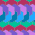
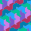

Polyrhombilles, one-sided: isohedral number 6
2 shapes · each shown with one of its simplest grid-aligned tilings, coloured by orbit · all galleries · family table


5-rhombille (one-sided) · k = 6 · ≅ 5-rhombille


11-rhombille (one-sided) · k = 6 · ≅ 11-rhombille